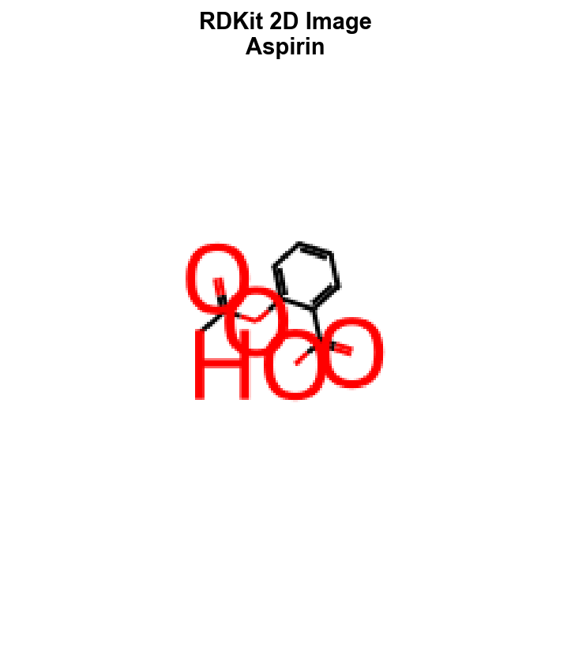
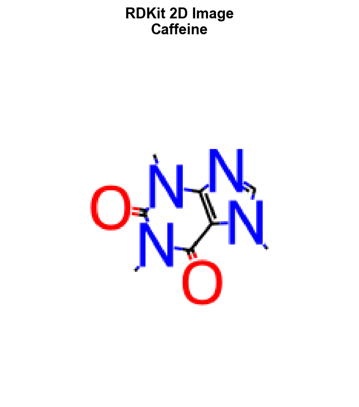
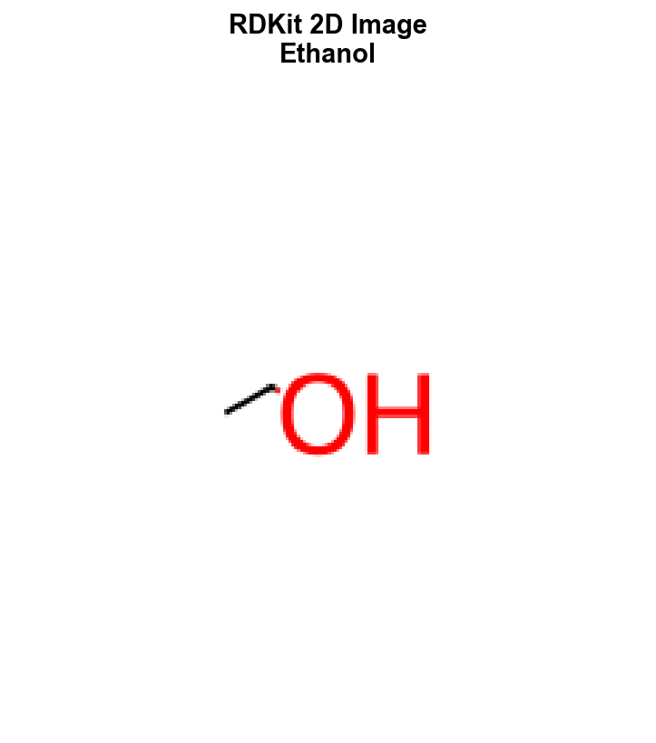
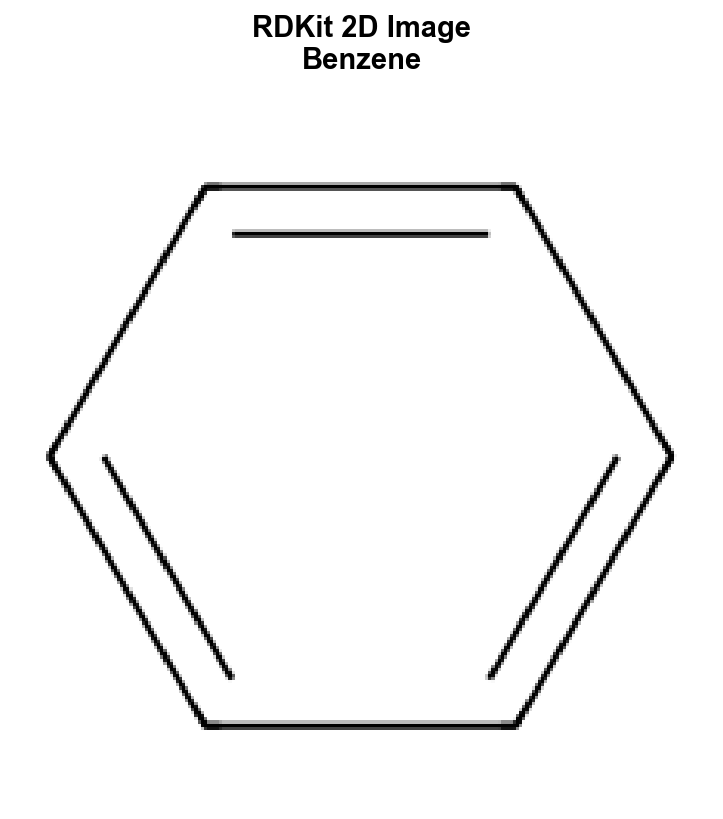
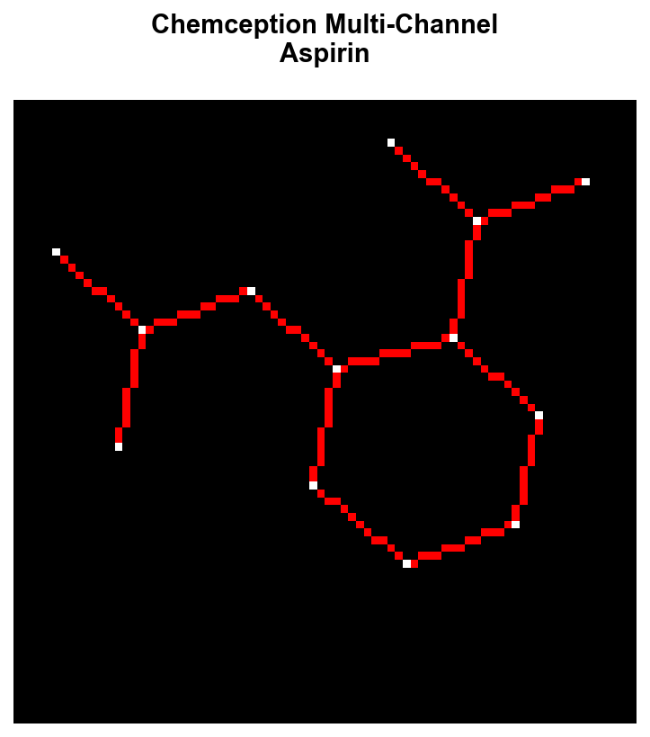
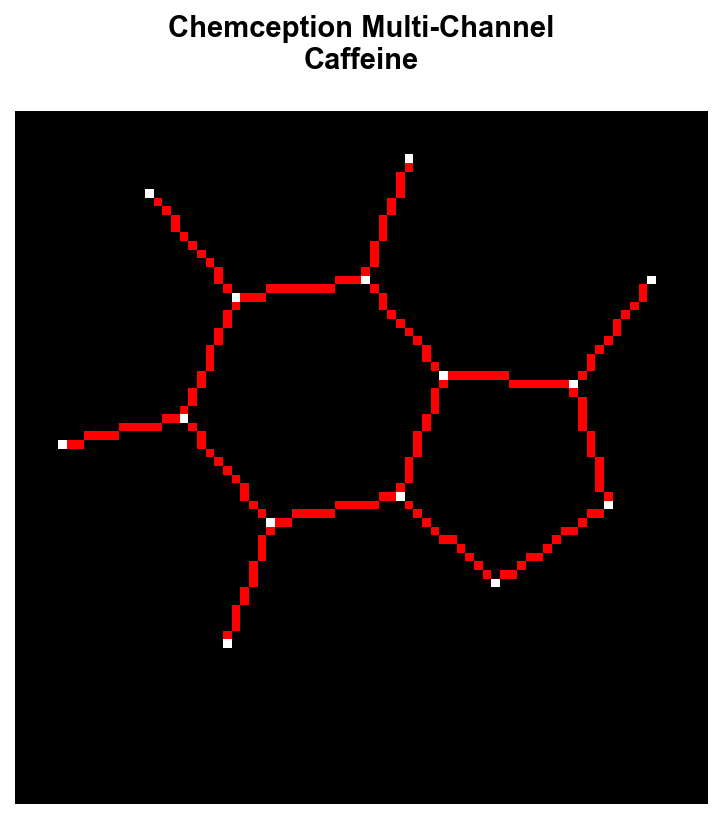
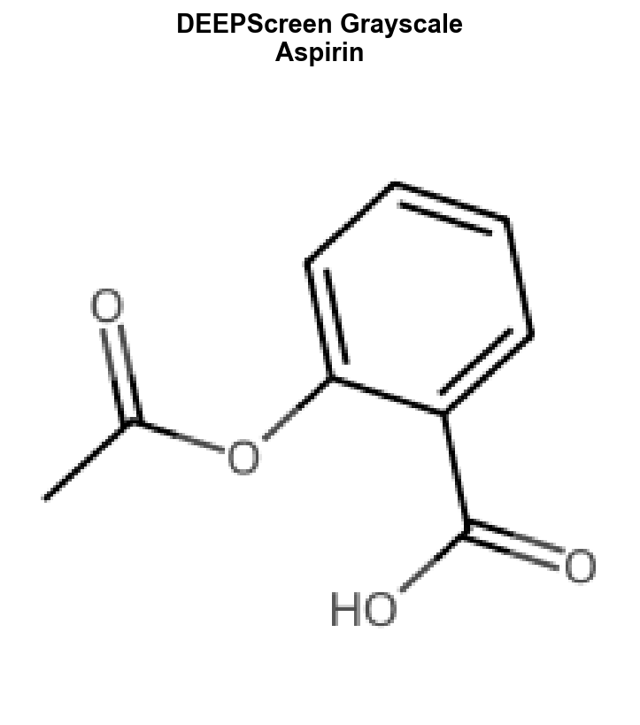
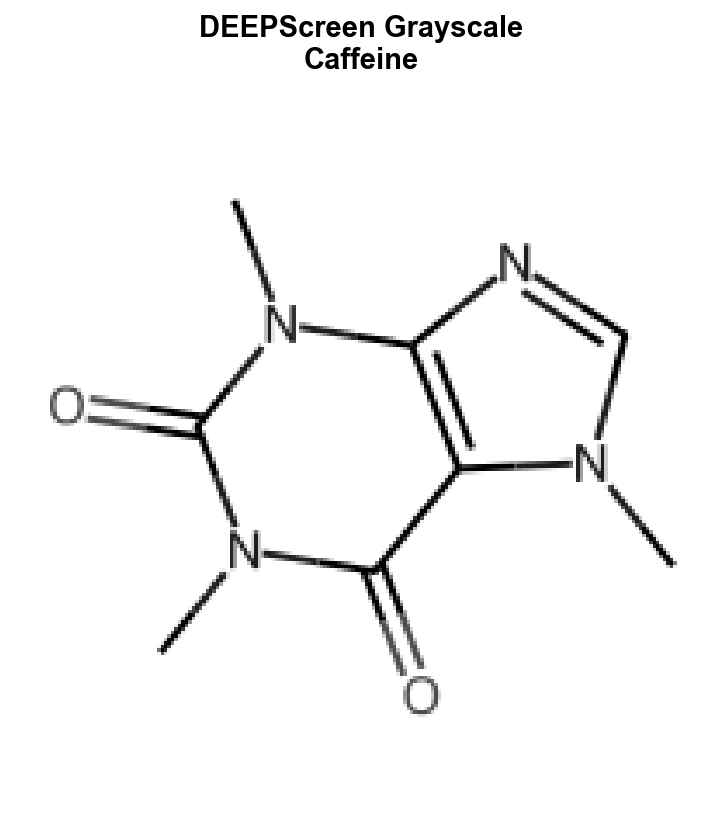

2D Molecular Images¶
Generate 2D molecular structure images optimized for convolutional neural networks. Convert SMILES strings into publication-quality images, multi-channel chemical representations, and extract deep features using pre-trained CNN models.
Overview¶
2D molecular images provide an intuitive visual representation that captures structural features in a format directly compatible with computer vision models. This approach leverages decades of CNN architecture development for molecular property prediction.
Publication-quality molecular structure images
Multi-channel images with chemical properties
Optimized grayscale images for screening
Deep features from pre-trained models
Available Featurizers¶
Featurizer |
Output Shape |
Parameters |
Description |
|---|---|---|---|
|
(224, 224, 3) |
|
Standard RDKit 2D images |
|
(80, 80, 4) |
|
4-channel chemical images |
|
(200, 200, 1) |
|
DEEPScreen-style images |
|
(224, 224, 3) |
|
Publication-quality images |
|
(2048,) |
|
Pre-trained CNN features |
Standard 2D Images¶
Generate high-quality 2D molecular structure images using RDKit’s drawing capabilities.
import polyglotmol as pm
import numpy as np
# Basic image generation
featurizer = pm.get_featurizer("rdkit_2d_image")
image = featurizer.featurize("c1ccccc1O") # phenol
print(f"Image shape: {image.shape}") # (224, 224, 3)
print(f"Image dtype: {image.dtype}") # uint8
print(f"Pixel range: {image.min()}-{image.max()}") # 0-255
# Custom image size
featurizer_512 = pm.get_featurizer("rdkit_2d_image", image_size=(512, 512))
high_res = featurizer_512.featurize("c1ccccc1O")
print(f"High-res shape: {high_res.shape}") # (512, 512, 3)
# Different molecules
molecules = ["CCO", "CCN", "CCC", "c1ccccc1", "CC(=O)OC1=CC=CC=C1C(=O)O"] # ethanol, ethylamine, propane, benzene, aspirin
images = featurizer.featurize(molecules)
print(f"Batch shape: {len(images)} images of {images[0].shape}")
Parameters¶
image_size: Tuple (width, height), default (224, 224)kekulize: Show explicit double bonds, default True
# Control drawing style
featurizer_large = pm.get_featurizer("rdkit_2d_image",
image_size=(400, 400),
kekulize=False)
image = featurizer_large.featurize("c1ccc2c(c1)[nH]c1ccccc12") # carbazole
Visual Examples¶
Here are RDKit 2D images showing different molecular structures:

CC(=O)OC1=CC=CC=C1C(=O)O
Drug molecule with carboxylic acid and ester functional groups

CN1C=NC2=C1C(=O)N(C(=O)N2C)C
Stimulant with fused purine rings and multiple nitrogens

CCO
Simple alcohol molecule

c1ccccc1
Aromatic hydrocarbon ring
Chemception Multi-Channel Images¶
Generate multi-channel images encoding chemical features as separate channels for enhanced CNN learning.
# Generate 4-channel chemical image
featurizer = pm.get_featurizer("chemception_image")
multi_channel = featurizer.featurize("CCN(C)C") # dimethylamine
print(f"Multi-channel shape: {multi_channel.shape}") # (80, 80, 4)
print(f"Data type: {multi_channel.dtype}") # float32
# Examine individual channels
bond_channel = multi_channel[:, :, 0] # Bond orders
atom_channel = multi_channel[:, :, 1] # Atomic numbers
hybrid_channel = multi_channel[:, :, 2] # Hybridization
charge_channel = multi_channel[:, :, 3] # Gasteiger charges
print(f"Bond channel range: {bond_channel.min():.2f}-{bond_channel.max():.2f}")
print(f"Atom channel range: {atom_channel.min():.2f}-{atom_channel.max():.2f}")
Channel Information¶
Channel 0: Bond order (1.0=single, 2.0=double, 3.0=triple)
Channel 1: Atomic number (scaled by 100)
Channel 2: Hybridization state (1=sp, 2=sp2, 3=sp3)
Channel 3: Gasteiger partial charges
# Analyze chemical features
complex_molecule = "CC1=CC=C(C=C1)C(=O)NC2=CC=C(C=C2)Cl" # drug-like molecule
chem_image = featurizer.featurize(complex_molecule)
# Count non-zero pixels per channel
for i, channel_name in enumerate(["Bonds", "Atoms", "Hybridization", "Charges"]):
non_zero = np.count_nonzero(chem_image[:, :, i])
print(f"{channel_name} channel: {non_zero} non-zero pixels")
Parameters¶
image_size: Square image dimension, default 80resolution: Pixel resolution in Angstroms, default 0.5
# High-resolution multi-channel images
featurizer_hires = pm.get_featurizer("chemception_image",
image_size=160,
resolution=0.25)
hires_chem = featurizer_hires.featurize("CC1=CC=C(C=C1)C(=O)NC2=CC=C(C=C2)Cl")
print(f"High-res Chemception: {hires_chem.shape}") # (160, 160, 4)
Visual Examples¶
Chemception multi-channel images show chemical features as separate channels (displayed as RGB composite):
 Multi-channel encoding with bond orders, atomic numbers, hybridization, and partial charges
 Complex heterocyclic structure with multiple nitrogen types
DEEPScreen Style Images¶
Generate optimized images for high-throughput virtual screening applications.
# Grayscale images (DEEPScreen standard)
featurizer = pm.get_featurizer("deepscreen_image")
gray_image = featurizer.featurize("CC(=O)OC1=CC=CC=C1C(=O)O") # aspirin
print(f"Grayscale shape: {gray_image.shape}") # (200, 200, 1)
# RGB variant for color-aware models
featurizer_rgb = pm.get_featurizer("deepscreen_image", grayscale=False)
color_image = featurizer_rgb.featurize("CC(=O)OC1=CC=CC=C1C(=O)O")
print(f"Color shape: {color_image.shape}") # (200, 200, 3)
# Custom image size
featurizer_custom = pm.get_featurizer("deepscreen_image",
image_size=128,
grayscale=True)
small_image = featurizer_custom.featurize("CC(=O)OC1=CC=CC=C1C(=O)O")
print(f"Custom size: {small_image.shape}") # (128, 128, 1)
Parameters¶
image_size: Square image dimension, default 200grayscale: Generate grayscale (True) or RGB (False), default True
# Batch processing for screening datasets
screening_molecules = ["CCO", "CCN", "CCC"] * 1000 # 3K molecules
featurizer = pm.get_featurizer("deepscreen_image")
screen_images = featurizer.featurize(screening_molecules, n_workers=8)
print(f"Screened {len(screen_images)} molecules")
Visual Examples¶
DEEPScreen images are optimized for high-throughput screening with consistent grayscale representation:
 Grayscale representation optimized for CNN screening models
 High-contrast grayscale suitable for large-scale virtual screening
CNN Feature Extraction¶
Extract deep features from molecular images using pre-trained convolutional neural networks.
Note
Requires PyTorch and torchvision: pip install torch torchvision
# Extract ResNet50 features
featurizer = pm.get_featurizer("cnn_features_resnet")
features = featurizer.featurize("c1ccc2c(c1)oc1ccccc12") # dibenzofuran
print(f"Feature shape: {features.shape}") # (2048,)
print(f"Feature type: {features.dtype}") # float32
print(f"Feature range: {features.min():.3f}-{features.max():.3f}")
# Check for valid features (no NaN/inf)
print(f"Valid features: {not np.isnan(features).any()}")
print(f"Feature norm: {np.linalg.norm(features):.2f}")
Available Models¶
# ResNet architectures
resnet18 = pm.get_featurizer("cnn_features_resnet", model_name="resnet18")
resnet50 = pm.get_featurizer("cnn_features_resnet", model_name="resnet50")
vgg16 = pm.get_featurizer("cnn_features_resnet", model_name="vgg16")
molecule = "c1ccc(cc1)C(=O)O" # benzoic acid
feat_18 = resnet18.featurize(molecule) # (512,)
feat_50 = resnet50.featurize(molecule) # (2048,)
feat_vgg = vgg16.featurize(molecule) # (4096,)
print(f"ResNet18 features: {feat_18.shape}")
print(f"ResNet50 features: {feat_50.shape}")
print(f"VGG16 features: {feat_vgg.shape}")
Parameters¶
model_name: CNN architecture (“resnet18”, “resnet50”, “vgg16”)image_size: Input image size, default 224pretrained: Use ImageNet weights, default True
# Custom configuration
featurizer_custom = pm.get_featurizer("cnn_features_resnet",
model_name="resnet18",
image_size=256,
pretrained=True)
custom_features = featurizer_custom.featurize("CCN(CC)CC") # triethylamine
print(f"Custom CNN features: {custom_features.shape}")
ImageMol Style Images¶
Generate publication-quality molecular images with consistent professional styling.
# Standard ImageMol images
featurizer = pm.get_featurizer("imagemol_style")
image = featurizer.featurize("c1ccc2c(c1)[nH]c1ccccc12") # carbazole
print(f"ImageMol shape: {image.shape}") # (224, 224, 3)
# Custom styling parameters
featurizer_custom = pm.get_featurizer("imagemol_style",
image_size=512,
bond_width=3,
atom_font_size=14)
styled_image = featurizer_custom.featurize("c1ccc2c(c1)[nH]c1ccccc12")
print(f"Custom styled: {styled_image.shape}") # (512, 512, 3)
Parameters¶
image_size: Square image dimension, default 224bond_width: Bond line thickness, default 2atom_font_size: Atom label font size, default 12
Batch Processing and Performance¶
# Efficient parallel processing
molecules = [
"CCO", "CCN", "CCC", "c1ccccc1", "CC(=O)O",
"CCN(CC)CC", "c1ccc(cc1)O", "CC(C)(C)O", "CCOCC"
] * 100 # 900 molecules
# Parallel image generation
featurizer = pm.get_featurizer("rdkit_2d_image")
images = featurizer.featurize(molecules, n_workers=8)
print(f"Generated {len(images)} images using 8 workers")
# Memory-efficient processing
def process_large_dataset(smiles_list, batch_size=500):
featurizer = pm.get_featurizer("rdkit_2d_image")
results = []
for i in range(0, len(smiles_list), batch_size):
batch = smiles_list[i:i+batch_size]
batch_results = featurizer.featurize(batch, n_workers=4)
results.extend(batch_results)
print(f"Processed {min(i+batch_size, len(smiles_list))}/{len(smiles_list)}")
return results
# Process large dataset
large_results = process_large_dataset(molecules)
Integration Examples¶
Dataset Integration¶
from polyglotmol.data import MolecularDataset, Molecule
# Create dataset with multiple image features
molecules = [Molecule(smi) for smi in ["CCO", "CCN", "CCC", "c1ccccc1"]]
dataset = MolecularDataset(molecules)
# Add multiple image representations
dataset.add_features("rdkit_2d_image") # (224, 224, 3)
dataset.add_features("chemception_image") # (80, 80, 4)
dataset.add_features("cnn_features_resnet") # (2048,)
# Access features
rdkit_images = dataset.features["rdkit_2d_image"]
cnn_features = dataset.features["cnn_features_resnet"]
print(f"Dataset has {len(dataset)} molecules with {len(dataset.features.columns)} feature types")
PyTorch Training Pipeline¶
import torch
import torch.nn as nn
from torch.utils.data import DataLoader, TensorDataset
# Generate training data
smiles_train = ["CCO", "CCN", "CCC", "c1ccccc1"] * 100
labels_train = [0, 0, 1, 1] * 100 # Binary classification
# Generate images
featurizer = pm.get_featurizer("rdkit_2d_image")
X = np.array(featurizer.featurize(smiles_train))
y = np.array(labels_train)
# Prepare tensors (NCHW format for PyTorch)
X_tensor = torch.FloatTensor(X.transpose(0, 3, 1, 2)) / 255.0
y_tensor = torch.LongTensor(y)
# Create data loader
train_dataset = TensorDataset(X_tensor, y_tensor)
train_loader = DataLoader(train_dataset, batch_size=32, shuffle=True)
print(f"Training data: {X_tensor.shape}") # (400, 3, 224, 224)
print(f"Labels: {y_tensor.shape}") # (400,)
# Simple CNN model
class MolecularCNN(nn.Module):
def __init__(self):
super().__init__()
self.features = nn.Sequential(
nn.Conv2d(3, 32, 3, padding=1),
nn.ReLU(),
nn.MaxPool2d(2),
nn.Conv2d(32, 64, 3, padding=1),
nn.ReLU(),
nn.MaxPool2d(2),
nn.AdaptiveAvgPool2d(7)
)
self.classifier = nn.Sequential(
nn.Linear(64 * 7 * 7, 128),
nn.ReLU(),
nn.Dropout(0.5),
nn.Linear(128, 2) # Binary classification
)
def forward(self, x):
x = self.features(x)
x = x.view(x.size(0), -1)
return self.classifier(x)
model = MolecularCNN()
print(f"Model created with {sum(p.numel() for p in model.parameters())} parameters")
Multi-Modal Feature Fusion¶
# Combine different image representations
test_molecule = "c1ccc(cc1)C(=O)O" # benzoic acid
# Generate multiple representations
rdkit_img = pm.get_featurizer("rdkit_2d_image").featurize(test_molecule)
chemception_img = pm.get_featurizer("chemception_image").featurize(test_molecule)
cnn_feat = pm.get_featurizer("cnn_features_resnet").featurize(test_molecule)
# Feature dictionary for ensemble models
features = {
'rdkit_2d': rdkit_img, # (224, 224, 3)
'chemception': chemception_img, # (80, 80, 4)
'cnn_features': cnn_feat # (2048,)
}
print("Multi-modal features generated:")
for name, feat in features.items():
print(f" {name}: {feat.shape}")
Visualization and Quality Control¶
# Image quality assessment
def assess_image_quality(images):
"""Assess generated image quality"""
stats = {}
images_array = np.array(images)
stats['mean_intensity'] = images_array.mean()
stats['std_intensity'] = images_array.std()
stats['min_intensity'] = images_array.min()
stats['max_intensity'] = images_array.max()
stats['dynamic_range'] = stats['max_intensity'] - stats['min_intensity']
# Check for completely black/white images
black_images = np.sum(images_array == 0, axis=(1,2,3)) == np.prod(images_array.shape[1:])
white_images = np.sum(images_array == 255, axis=(1,2,3)) == np.prod(images_array.shape[1:])
stats['black_images'] = np.sum(black_images)
stats['white_images'] = np.sum(white_images)
stats['valid_images'] = len(images) - stats['black_images'] - stats['white_images']
return stats
# Test image quality
test_molecules = ["CCO", "INVALID", "CCN", ""] # Include problematic cases
featurizer = pm.get_featurizer("rdkit_2d_image")
valid_images = []
for mol in test_molecules:
try:
img = featurizer.featurize(mol)
valid_images.append(img)
except:
print(f"Failed to generate image for: {mol}")
if valid_images:
quality_stats = assess_image_quality(valid_images)
print("Image Quality Assessment:")
for key, value in quality_stats.items():
print(f" {key}: {value}")
References¶
RDKit Documentation: https://rdkit.readthedocs.io/en/latest/GettingStartedInPython.html#drawing-molecules
Chemception: Goh, G.B., et al. “Using rule-based labels for weak supervised learning: a ChemNet for transferable chemical property prediction.” KDD 2018
DEEPScreen: Altae-Tran, H., et al. “Low data drug discovery with one-shot learning.” ACS Central Science 2017
PyTorch Vision: https://pytorch.org/vision/stable/models.html